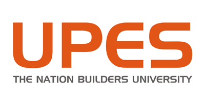
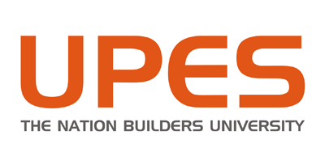

|
Summer Student, Experimental Physics-ATLAS Detector-Inner Detector (EP-ADE-ID) Section I developed a front-end DAQ firmware integrating a Tri-mode Ethernet-based IPBus F/W based on UDP/IP
for front-end data/status monitoring, an 8b/10b encoding based Rx and Tx Core F/W to communicate with
the FE-I4 Silicon Pixel Detector Chip at 160Mbps and a back-end Gigabit Transreceiver (GBT) communication
protocol. In the process, I also developed a data_routing entity called E_Link Bank.
I participated in the CERNWebfest and helped design a Machine-Learning optimised adaptable quiz application
for iOS devices by using Ionic and Javascript.
Further, I attended the talks during CERN OpenLab visits to Open Systems Zurich (Internet Security), ETH
Zurich (Machine Learning Applications) and Google Zurich (Machine Learning Models in ’Smart Reply’ in
Gmail). |
 |
Research Trainee, Data Acquisition and Processing Systems (DA&PS) Section, Mod Labs
Bhabha Atomic Research Centre (BARC) is India’s premier nuclear research facility based in Trombay, Mumbai
(INDIA). I developed Compression and De-Noising Algorithms for A-, B- and C- Scan Ultrasonic Scan Data
for application in Non-Destructie testing of Materials.
I completed my work well before time achieving lossless data compression up to 92% in A-Scan data, and
75.37% in C-Scan data using standard information coding algorithms of Huffman Coding, Shannon-Fano
Coding and Arithmetic Coding.(E.g. for comparison,WinZip achieved compression of 78% in the best configuration
on the same C-Scan data.) Further, I studied Lempel Ziv Compression as Case Study. I also studied and
analysed the compression rations and noise reduction patterns in lossy compression algorithms including 1-D
and 2-D DCT, DFT and Wavelet Transform. |
 |
Chief Electronics, Phase II, Lockheed Martin Roll-On/Roll-Off Design Challenge
As Chief Electronics in Phase-II (Critical Design Phase) of the competition by Lockheed Martin, I worked on
detailed technical design of Aerial Surveillance Systems using drones, Automation of Aircraft Payload and
Communication Systems.
Excelled with national rank 1, we secured a research grant by the company ($25,000 & $40,000) to manufacture
the prototype payload structure compatible with C-130J Super Hercules Military Aircraft. The payload is
intended for disaster relief operations by the Indian Air Force (IAF) and National Disaster Response Force
(NDRF).
Further, the team was recognized nationally through national newspapers such as The Tribune, The Pioneer,
The Hindu, Indian Defense Review etc. “The UPES team, “Tesseract”, beat IIT Delhi, DTU and BITS, Pilani,
to emerge as the national winner of the Lockheed Martin aerospace design challenge.” (Tribune March 22,
2016) |
 |
2015: Team Member (Electronics), Team Astral As a Member Electronics group of Team Astral, I developed the Sensor Subsystem (Arduino MCU) and Ground
Control Station (MATLAB based GUI). The Auto-Gyro Recovery Imager was launched (at Burkett, Texas) on 11th
June on a sounding rocket and achieved an International Rank 13th out of 43 teams worldwide.
2016: Team Leader (Electronics), Team Astral
As Team Leader (Electronics) of Team Astral, I lead the development and integration of Sensor Subsystems
(using AVR MCU), Communication Systems (ZigBee and ESP8266) and Ground Control Station (GUI). We
achieved an International Rank of 4th out of 72 teams worldwide and 1st in Europe, Asia and Asia-Pacific.
The 2016 mission statement required to design and build a space-type system, Mars Glider to demonstrate the
operations (Data Acquisition and Telemetry) during a Sounding Rocket launch.
“Indian Students present an epic CanSat System at Global Aerospace Competition in Texas, and it left
NASA absolutely stunned.” -Business Insider, July 19, 2016
2017: Team Mentor, Team Astral
Team mentor and technical advisor to Team Astral. We achieved International Rank#1 outranking 90+ participating
university teams from more than 10 countries. With a cumulative score of 98.31%, Team Astral maintained the
1st place in the world in the Phase-1 PDR, Phase-2 CDR and Phase-3 Launch.
|
 |
Chief Electronics, Team Garud I served as the Chief Avionics and Payload Electronics Engineer for the Sounding Rocket ’Kalam’ in Team
Garud (Rocketry Division of UPES). ’Kalam’ stands 2.8 meters tall, a Solid COTS-propellent based sounding
rocket that carries a scientific payload weighing 4 kgs. Team Garud has been the only Indian Student team to
successfully launch a rocket at IREC, USA. |
 |
Electronics Engineer, Stratos III Rocket I am working on PCB Design using Altium Designer 18 and DAQ Firmware Development on ARM Cortex M3
Microcontroller. DARE is the rocketry Dream Team of TU Delft and Stratos-III Sounding Rocket is intended to
break the current European altitude record (32.3km) for student built sound rockets. |
Institutes where I have spent at least 6 months at
 
